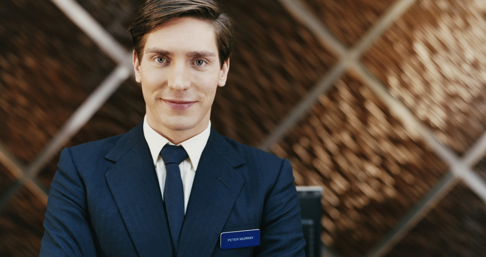

Desde 1970, Hotel Bahia Dorada a sido el mejor sito para establecer y conciderar tu lugar seguro ofreciendo habitaciones tan comodas como tu propia casa
el mejor lugar para quedarte.
Misión
Proveer una experiencia de hospedaje que combine calidez, comodidad y excelencia en el servicio.
Valores
Hospitalidad
Calidad
Compromiso
Sostenibilidad
Nuestro equipo

Eduardo Luquin
Gerente General. Más de 15 años liderando equipos en la industria hotelera.
Fernanda Alvarez
Recepcionista. Siempre con una sonrisa y dispuesto a ayudar.
Laura Herrera
Chef Ejecutiva. Especialista en cocina internacional y local.